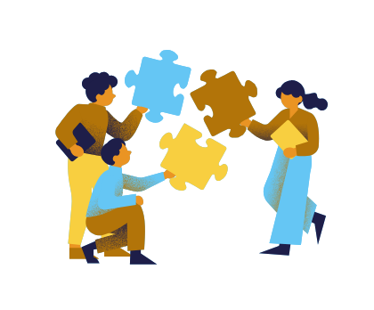

採用担当者向け管理画面
複数の転職サイト連絡、選考スケジュール、AIによる候補者提案をまとめて確認できます。
外部転職サイト連絡一覧
外部転職サイトごとの応募・返信・面接調整状況を確認できます。
ルクルーント
新規応募 3
返信 2
日程調整 1
プロフィール到着 1
オン転職
新規応募 4
返信 1
日程調整 2
プロフィール到着 3
ユウナビ転職
新規応募 2
返信 5
日程調整 1
プロフィール到着 2
カレンダー
過去・現在・今後の選考予定を横断して確認できます。
2026年4月
1
2
3
4
5
6
7
8
9
10
11
12
13
14
15
16
17
18
19
20
21
22
23
24
25
26
27
28
29
30
2026年5月
1
1件
2
3
4
5
6
7
8
9
10
11
12
2件
13
14
15
1件
16
17
18
19
20
21
22
23
24
25
26
27
28
29
30
31
2026年6月
1
2
3
4
5
6
7
8
9
10
11
12
13
14
15
16
17
18
19
20
21
22
23
24
25
26
27
28
29
30
今後の予定
明日
14:00 田村 知子 / カジュアル面談 / 仮予定
3日後
16:30 森 華子 / ポートフォリオ確認 / 確定
来週
10:00 石井 正樹 / 最終面接 / 仮予定
AIとの対話から見えてきた、その人らしさや空気感まで
“この人と話してみたい”と思える出会いを提案します。
Profile Open
AI対話分析より
周囲が自然と相談したくなる人
対話から見えた人となり
相手の言葉を急いで判断せず、一度受け止めてから丁寧に返す対話傾向があります。
AIが見つけた相性
- 安心感のあるコミュニケーション
- 周囲を支える関わり方
- 忙しい場面でも落ち着いて対応できる
#安心感
#気配り
#支える力
この人となりを知る →
AI対話分析より
チーム全体を見ながら、静かに調整役を担える人
対話から見えた人となり
自分だけが前に出るよりも、周囲の状況を見ながら必要な人や情報をつなぐ傾向があります。
AIが見つけた相性
- 全体を見ながら動ける
- 人と人の間に入り調整できる
- チームの空気を落ち着かせられる
#調整力
#チーム視点
#落ち着き

AI対話分析より
相手に合わせながら、関係を丁寧につないでいける人
対話から見えた人となり
相手の立場や状況をくみ取りながら、無理に進めず、少しずつ信頼関係を築いていく傾向があります。
AIが見つけた相性
- 相手のペースを尊重できる
- 関係性を丁寧に育てられる
- 周囲と協力して進められる
#共感力
#関係構築
#協調性
AI対話分析より
忙しい場面でも、空気を荒らさずに動ける人
対話から見えた人となり
慌ただしい状況でも感情的になりすぎず、落ち着いた受け答えで周囲に安心感を与える傾向があります。
AIが見つけた相性
- 冷静に状況を受け止められる
- 相手に安心感を与えられる
- 変化の中でも丁寧に対応できる
#冷静さ
#安心感
#柔軟性
AI対話分析より
相手の言葉を受け止めながら、安心できる対話をつくれる人
対話から見えた人となり
自分の意見を急いで出すよりも、相手の考えを理解しながら言葉を選ぶ傾向があります。
AIが見つけた相性
- 聞く姿勢を大切にできる
- 相手の不安に寄り添える
- 落ち着いた対話ができる
#傾聴力
#安心感
#共感力
AI対話分析より
小さな変化に気づき、周囲をそっと支えられる人
対話から見えた人となり
目立つ役割よりも、周囲が動きやすくなるように気づいたことを自然に補う傾向があります。
AIが見つけた相性
- 周囲の変化に気づける
- 支える役割を自然に担える
- 丁寧に物事を整えられる
#気配り
#支える力
#丁寧さ
※表示される内容は、AIとの対話から分析された一部情報です。